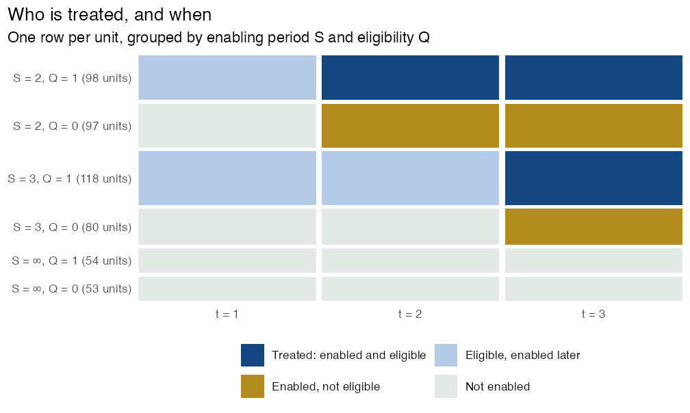
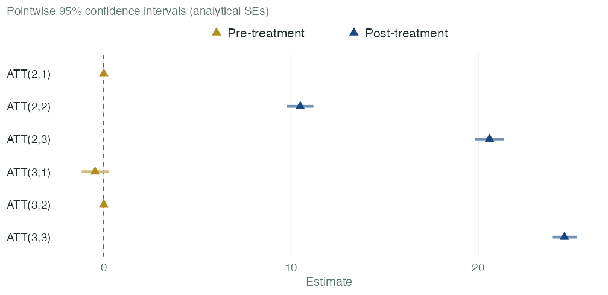
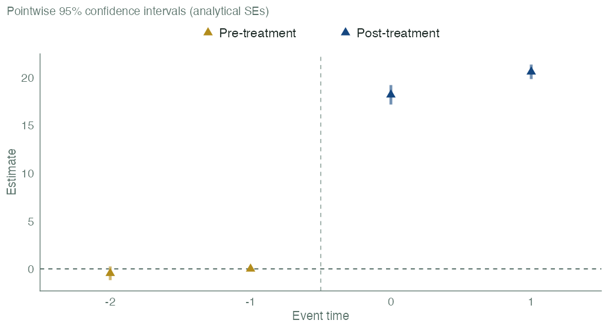
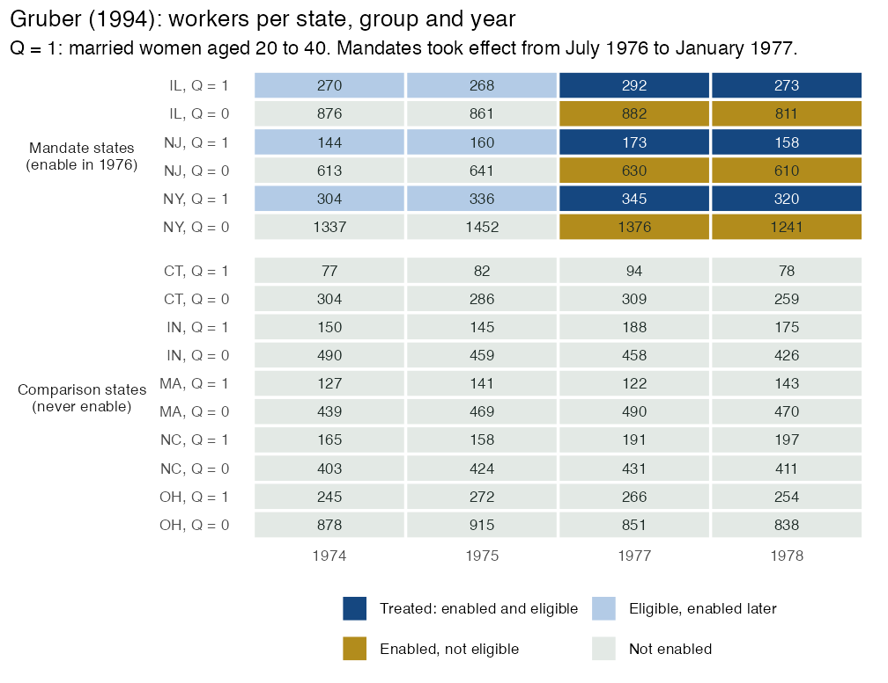

Triple Differences Estimators
Average treatment effects and event studies for triple-difference designs (DDD).


Website · Reference · Changelog · Paper (PDF) · arXiv · Cite · Report a bug
![Animation in three steps. Step 1, raw panel: units grouped by enabling period S and eligibility Q over periods 1 to 3; a line sweeps across the periods and the treated cells turn dark blue. Step 2, ddd(): for each ATT(g,t), only the data it uses stay in view, in periods g minus 1 and t: the enabled eligible units, the ineligible units of the same group, and the groups not yet or never enabled; each estimate joins a coefficient strip. Step 3, agg_ddd(): the event-study points appear, and the links to the ATT(g,t) each point averages appear and disappear.](reference/figures/README-hero.svg)
Three steps: understand your data, let ddd() compute each ATT(g,t), and let agg_ddd() average them into an event study. The animation uses the simulated panel of the Quick start with not-yet-treated comparison groups.
What triplediff does
triplediff is an R package for computing average treatment effects in Triple Differences Designs (also known as Difference-in-Differences-in-Differences or DDD). DDD designs are widely used in empirical work to relax parallel trends assumptions in Difference-in-Differences settings. This package provides functions to estimate group-time average treatment effect and event-study type estimands associated with DDD designs. The setups allowed are:
- Two-periods or Multiple Periods DDD.
- Single Treatment Date and Variation in Treatment Timing (i.e., staggered adoption).
- Conditional and Unconditional DDD parallel trends assumptions.
The triplediff package implements the framework proposed in:
Installation
Install the released version from CRAN:
install.packages("triplediff")Or install the development version from GitHub:
# install.packages("devtools")
devtools::install_github("marcelortizv/triplediff")This README uses version 0.3.0.
Quick start
We provide a quick start example to illustrate the main features of the package. The UX is designed to be similar to the did package, so users familiar with it should feel comfortable using triplediff.
ddd is the main function for computing the DDD estimators proposed in Ortiz-Villavicencio and Sant’Anna (2025). At its core, ddd employs regression adjustment, inverse probability weighting, and doubly robust estimators that are valid under conditional DDD parallel trends.
To use ddd, the minimal data requirements include:
id: Unit unique identifier (e.g., firm, individual, etc.). Its column name is associated with parameteridname.period: Time identifier (e.g., year, month, etc.). Its column name is associated with parametertname.outcome: Outcome variable of interest. Its column name is associated with parameteryname.state: First period when treatment is enabled for a particular unit. It is a positive number for treated units and defines which group the unit belongs to. It takes value0orInffor never-enabling units. Its column name is associated with parametergname.partition: This is an indicator variable that is 1 for the units eligible for treatment and 0 otherwise. Its column name is associated with parameterpname.
Below, S is the period in which a unit’s group enables treatment (the gname column), and Q is eligibility (the pname column). A unit is treated in period t when t ≥ S and Q = 1. A group with S = 0 or Inf never enables treatment. We write this as S = ∞.
The following are two simplified examples of how to use the ddd function. The first one is a multiple-period DDD setup with staggered treatment adoption. It goes from the raw data to an event study. The second one is a two-period DDD setup.
Multiple periods with staggered adoption: from the data to an event study
First, we can simulate some data with a built-in function gen_dgp_mult_periods that generates a multiple-period DDD setup with staggered treatment adoption. This function receives the number of units and the type of DGP design to generate. The gen_dgp_mult_periods function returns a data frame with the required columns for the ddd function with 4 covariates.
set.seed(1234) # Set seed for reproducibility
# Simulate data for a multiple-period DDD setup with staggered treatment adoption
data <- gen_dgp_mult_periods(size = 500, dgp_type = 1)$data
head(data)
#> Key: <id>
#> id state partition time y cov1 cov2 cov3
#> <int> <num> <num> <int> <num> <num> <num> <num>
#> 1: 1 3 1 1 1371.1923 -0.97080934 1.3995704 1.48834130
#> 2: 1 3 1 2 1690.9157 -0.97080934 1.3995704 1.48834130
#> 3: 1 3 1 3 2034.5661 -0.97080934 1.3995704 1.48834130
#> 4: 2 2 1 1 934.0812 0.02591115 -0.9747527 0.01714001
#> 5: 2 2 1 2 1189.5495 0.02591115 -0.9747527 0.01714001
#> 6: 2 2 1 3 1444.1072 0.02591115 -0.9747527 0.01714001
#> cov4 cluster
#> <num> <int>
#> 1: 0.3853346 27
#> 2: 0.3853346 27
#> 3: 0.3853346 27
#> 4: -0.7822000 45
#> 5: -0.7822000 45
#> 6: -0.7822000 45Step 1: look at the data. Each unit belongs to one of six groups: its enabling period S (2, 3 or ∞) and its eligibility Q (1 or 0). The heatmap draws one row per unit and one column per period. Only the eligible units of a group that has enabled treatment are treated.
Show the ggplot2 code for this figure
library(ggplot2)
# Status of each unit in each period. S is the enabling period (`state`,
# 0 = never), Q is eligibility (`partition`), t is the period (`time`).
status_of <- function(S, Q, t) {
enabled <- S != 0 & t >= S
ifelse(enabled & Q == 1, "Treated: enabled and eligible",
ifelse(enabled, "Enabled, not eligible",
ifelse(S != 0 & Q == 1, "Eligible, enabled later", "Not enabled")))
}
status_colors <- c("Treated: enabled and eligible" = "#154780",
"Eligible, enabled later" = "#B3CBE6",
"Enabled, not eligible" = "#B28C1C",
"Not enabled" = "#E3E9E5")
units <- unique(as.data.frame(data)[, c("id", "state", "partition")])
units <- units[order(match(units$state, c(2, 3, 0)), -units$partition, units$id), ]
block <- paste(match(units$state, c(2, 3, 0)), 1 - units$partition) # one block per (S, Q)
units$row <- seq_len(nrow(units)) + 8 * (match(block, unique(block)) - 1) # gaps between blocks
cells <- merge(as.data.frame(data), units[, c("id", "row")], by = "id")
cells$status <- factor(status_of(cells$state, cells$partition, cells$time),
levels = names(status_colors))
labels <- aggregate(row ~ state + partition, data = units,
FUN = function(r) c(mid = mean(r), n = length(r)))
labels <- data.frame(labels[1:2], labels$row)
labels$text <- sprintf("S = %s, Q = %d (%d units)",
ifelse(labels$state == 0, "∞", labels$state),
labels$partition, labels$n)
p_heat <- ggplot(cells, aes(x = time, y = row, fill = status)) +
geom_tile(width = 0.97, height = 1) +
scale_fill_manual(values = status_colors, drop = FALSE, name = NULL) +
scale_y_reverse(breaks = labels$mid, labels = labels$text, expand = c(0.01, 0)) +
scale_x_continuous(breaks = 1:3, labels = paste("t =", 1:3), expand = c(0, 0)) +
labs(x = NULL, y = NULL,
title = "Who is treated, and when",
subtitle = "One row per unit, grouped by enabling period S and eligibility Q") +
theme_minimal(base_size = 11) +
theme(panel.grid = element_blank(), legend.position = "bottom",
plot.title.position = "plot") +
guides(fill = guide_legend(nrow = 2, byrow = TRUE))
DDD compares the treated cells with three comparison groups. For ATT(2,2) with control_group = "nevertreated", these are the ineligible units of the S = 2 group, and the eligible and the ineligible units of the S = ∞ group.
Step 2: estimate the group-time effects. Now we can estimate the group-time average treatment effect on the treated using the ddd function.
# Estimate the group-time average treatment effect in DDD
att_gt <- ddd(yname = "y", tname = "time", idname = "id", gname = "state",
pname = "partition", xformla = ~cov1 + cov2 + cov3 + cov4,
data = data, control_group = "nevertreated",
base_period = "universal", est_method = "dr")
summary(att_gt)
#> Call:
#> ddd(yname = "y", tname = "time", idname = "id", gname = "state",
#> pname = "partition", xformla = ~cov1 + cov2 + cov3 + cov4,
#> data = data, control_group = "nevertreated", base_period = "universal",
#> est_method = "dr")
#> =========================== DDD Summary ==============================
#> DR-DDD estimation for the ATT(g,t):
#> Group Time ATT(g,t) Std. Error [95% Pointwise Conf. Band]
#> 2 1 0.0000 NA NA NA
#> 2 2 10.4901 0.3613 9.7819 11.1983 *
#> 2 3 20.5986 0.3868 19.8405 21.3568 *
#> 3 1 -0.4593 0.3660 -1.1767 0.2580
#> 3 2 0.0000 NA NA NA
#> 3 3 24.5983 0.3333 23.9450 25.2515 *
#>
#> Note: * indicates that the confidence interval does not contain zero.
#> --------------------------- Data Info -----------------------------
#> Panel Data
#> Outcome variable: y
#> Qualification variable: partition
#> Control group: Never Treated
#> No. of units per treatment group:
#> Units enabling treatment at period 3: 198
#> Units enabling treatment at period 2: 195
#> Units never enabling treatment: 107
#> --------------------------- Algorithms ------------------------------
#> Outcome Regression estimated using: OLS
#> Propensity score estimated using: Maximum Likelihood
#> --------------------------- Std. Errors ----------------------------
#> Level of significance: 0.05
#> Analytical standard errors.
#> Type of confidence band: Pointwise Confidence Interval
#> =====================================================================
#> See Ortiz-Villavicencio and Sant'Anna (2025) for details.plot() draws each ATT(g,t) with its confidence interval. Pre-treatment cells are gold, and post-treatment cells are dark blue.
plot(att_gt)
Step 3: aggregate to an event study. Then, we can aggregate the group-time average treatment effect on the treated to obtain the event-study type estimates. The agg_ddd function allows us to aggregate the results from the ddd function.
es_e <- agg_ddd(att_gt, type = "eventstudy")
summary(es_e)
#> Call:
#> agg_ddd(ddd_obj = att_gt, type = "eventstudy")
#> ========================= DDD Aggregation ============================
#> Overall summary of ATT's based on event-study/dynamic aggregation:
#> ATT Std. Error [ 95% Conf. Int.]
#> 19.398 0.3564 18.6994 20.0965 *
#>
#> Event Study:
#> Event time Estimate Std. Error [95% Ptwise. Conf. Band]
#> -2 -0.4593 0.3660 -1.1767 0.2580
#> -1 0.0000 NA NA NA
#> 0 18.1973 0.5179 17.1823 19.2123 *
#> 1 20.5986 0.3868 19.8405 21.3568 *
#>
#> Note: * indicates that the confidence interval does not contain zero.
#> --------------------------- Data Info -----------------------------
#> Outcome variable: y
#> Qualification variable: partition
#> Control group: Never Treated
#> --------------------------- Std. Errors ----------------------------
#> Level of significance: 0.05
#> Analytical standard errors.
#> =====================================================================
#> See Ortiz-Villavicencio and Sant'Anna (2025) for details.plot() draws the event study. It returns a ggplot object, so you can change it with +.
plot(es_e)
Not-yet-treated units as comparison group (GMM)
We can also estimate the group-time average treatment effect using a GMM-based estimator with not-yet-treated units as comparison group. This is done by setting the control_group parameter to "notyettreated" in the ddd function.
# do the same but using GMM-based notyettreated
att_gt_nyt <- ddd(yname = "y", tname = "time", idname = "id", gname = "state",
pname = "partition", xformla = ~cov1 + cov2 + cov3 + cov4,
data = data, control_group = "notyettreated",
base_period = "universal", est_method = "dr")
summary(att_gt_nyt)
#> Call:
#> ddd(yname = "y", tname = "time", idname = "id", gname = "state",
#> pname = "partition", xformla = ~cov1 + cov2 + cov3 + cov4,
#> data = data, control_group = "notyettreated", base_period = "universal",
#> est_method = "dr")
#> =========================== DDD Summary ==============================
#> DR-DDD estimation for the ATT(g,t):
#> Group Time ATT(g,t) Std. Error [95% Pointwise Conf. Band]
#> 2 1 0.0000 NA NA NA
#> 2 2 10.1894 0.2759 9.6486 10.7302 *
#> 2 3 20.5986 0.3868 19.8405 21.3568 *
#> 3 1 -0.4593 0.3660 -1.1767 0.2580
#> 3 2 0.0000 NA NA NA
#> 3 3 24.5983 0.3333 23.9450 25.2515 *
#>
#> Note: * indicates that the confidence interval does not contain zero.
#> --------------------------- Data Info -----------------------------
#> Panel Data
#> Outcome variable: y
#> Qualification variable: partition
#> Control group: Not yet Treated (GMM-based)
#> No. of units per treatment group:
#> Units enabling treatment at period 3: 198
#> Units enabling treatment at period 2: 195
#> Units never enabling treatment: 107
#> --------------------------- Algorithms ------------------------------
#> Outcome Regression estimated using: OLS
#> Propensity score estimated using: Maximum Likelihood
#> --------------------------- Std. Errors ----------------------------
#> Level of significance: 0.05
#> Analytical standard errors.
#> Type of confidence band: Pointwise Confidence Interval
#> =====================================================================
#> See Ortiz-Villavicencio and Sant'Anna (2025) for details.From this result, we can observe that the standard error of ATT(2,2) is 0.276, lower than 0.361 with control_group = "nevertreated", since we leverage the additional information from the not-yet-treated units in the estimation.
- ⚠️ We recommend users to read our paper for further details on the GMM-based procedure and its difference with other estimators relying in not-yet-treated units as comparison group.
Two periods, with covariates
First, we simulate some data with a built-in function gen_dgp_2periods that generates a two-period DDD setup with a single treatment date. This function receives the number of units and the type of DGP design to generate. The gen_dgp_2periods function returns a data frame with the required columns for the ddd function with 4 covariates.
set.seed(1234) # Set seed for reproducibility
# Simulate data for a two-periods DDD setup
df <- gen_dgp_2periods(
size = 5000, # Number of units
dgp_type = 1 # Type of DGP design
)$data
head(df)
#> Key: <id>
#> id state partition time y cov1 cov2 cov3
#> <int> <num> <num> <int> <num> <num> <num> <num>
#> 1: 1 0 0 1 209.9152 -0.97080934 -1.1726958 2.3893945
#> 2: 1 0 0 2 417.5260 -0.97080934 -1.1726958 2.3893945
#> 3: 2 0 0 1 211.4919 0.02591115 0.2763066 0.1063123
#> 4: 2 0 0 2 420.3656 0.02591115 0.2763066 0.1063123
#> 5: 3 0 0 1 221.9431 0.97147321 -0.4292088 0.5012794
#> 6: 3 0 0 2 440.9623 0.97147321 -0.4292088 0.5012794
#> cov4 cluster
#> <num> <int>
#> 1: 0.2174955 39
#> 2: 0.2174955 39
#> 3: -0.1922253 29
#> 4: -0.1922253 29
#> 5: 1.1027248 44
#> 6: 1.1027248 44Now we can estimate the average treatment effect on the treated (ATT) using the ddd function.
# Estimate the average treatment effect on the treated, ATT(2,2)
att_22 <- ddd(yname = "y", tname = "time", idname = "id", gname = "state",
pname = "partition", xformla = ~cov1 + cov2 + cov3 + cov4,
data = df, control_group = "nevertreated", est_method = "dr")
summary(att_22)
#> Call:
#> ddd(yname = "y", tname = "time", idname = "id", gname = "state",
#> pname = "partition", xformla = ~cov1 + cov2 + cov3 + cov4,
#> data = df, control_group = "nevertreated", est_method = "dr")
#> =========================== DDD Summary ==============================
#> DR-DDD estimation for the ATT:
#> ATT Std. Error Pr(>|t|) [95% Ptwise. Conf. Band]
#> -0.0780 0.0828 0.3463 -0.2404 0.0843
#>
#> Note: * indicates that the confidence interval does not contain zero.
#> --------------------------- Data Info -----------------------------
#> Panel Data
#> Outcome variable: y
#> Qualification variable: partition
#> No. of units at each subgroup:
#> treated-and-eligible: 1232
#> treated-but-ineligible: 1285
#> eligible-but-untreated: 1256
#> untreated-and-ineligible: 1227
#> --------------------------- Algorithms ------------------------------
#> Outcome Regression estimated using: OLS
#> Propensity score estimated using: Maximum Likelihood
#> --------------------------- Std. Errors ----------------------------
#> Level of significance: 0.05
#> Analytical standard errors.
#> Type of confidence band: Pointwise Confidence Interval
#> =====================================================================
#> See Ortiz-Villavicencio and Sant'Anna (2025) for details.Real data: Gruber (1994)
gruber1994 holds the data of Gruber (1994), a classic DDD application. Three states (IL, NJ and NY) passed laws that required health insurance to cover maternity. The laws took effect between July 1976 and January 1977, so treatment_starts is 1976 for these states. The eligible group (Q = 1) is married women aged 20 to 40. The data are repeated cross-sections: each row is a different worker. The heatmap counts the workers in each state, group and year.
Show the ggplot2 code for this figure
cells_g <- aggregate(id ~ state + treat_group + year + treatment_starts,
data = gruber1994, FUN = length)
names(cells_g)[names(cells_g) == "id"] <- "workers"
cells_g$status <- factor(status_of(cells_g$treatment_starts, cells_g$treat_group, cells_g$year),
levels = names(status_colors))
cells_g$group <- factor(ifelse(cells_g$treatment_starts == 0,
"Comparison states\n(never enable)",
"Mandate states\n(enable in 1976)"),
levels = c("Mandate states\n(enable in 1976)",
"Comparison states\n(never enable)"))
cells_g <- cells_g[order(cells_g$group, cells_g$state, -cells_g$treat_group), ]
cells_g$row <- paste0(cells_g$state, ", Q = ", cells_g$treat_group)
cells_g$row <- factor(cells_g$row, levels = rev(unique(cells_g$row)))
# The counts are dark on every cell except the Treated cells, where they are white.
p_gruber <- ggplot(cells_g, aes(x = factor(year), y = row, fill = status)) +
geom_tile(colour = "white", linewidth = 0.8) +
geom_text(aes(label = workers,
colour = status != "Treated: enabled and eligible"),
size = 3, show.legend = FALSE) +
scale_colour_manual(values = c(`TRUE` = "#1E2B27", `FALSE` = "white")) +
scale_fill_manual(values = status_colors, drop = FALSE, name = NULL) +
facet_grid(rows = vars(group), scales = "free_y", space = "free_y", switch = "y") +
labs(x = NULL, y = NULL, title = "Gruber (1994): workers per state, group and year",
subtitle = "Q = 1: married women aged 20 to 40. Mandates took effect from July 1976 to January 1977.") +
theme_minimal(base_size = 11) +
theme(panel.grid = element_blank(), legend.position = "bottom",
strip.placement = "outside", strip.text.y.left = element_text(angle = 0),
plot.title.position = "plot") +
guides(fill = guide_legend(nrow = 2, byrow = TRUE))
Reference: Gruber, J. (1994). The Incidence of Mandated Maternity Benefits. American Economic Review, 84(3), 622-641.
Release note
The current version is released in an alpha stage: the core features are implemented and made available so users can try them out and provide feedback. Please, be aware that it remains under active development, so long-term stability is not guaranteed—APIs may evolve, adding more features and/or breaking changes can occur at any time, without a deprecation cycle.
Use GitHub Issues to report bugs, request features or provide feedback.
🚀 Currently supported
- ✅ Two-period DDD with single treatment date.
- ✅ Multiple-period DDD with single treatment date.
- ✅ DDD with staggered treatment adoption (i.e., more than two periods and variation in treatment timing).
- ✅ Aggregations procedures (e.g., event-study type estimates).
- ✅ GMM-based estimations with not-yet-treated units as comparison group.
- ✅ Repeated cross-sectional data.
- ✅ Unbalanced panel data.
- ✅ Built-in plots:
plot()forddd()andagg_ddd()results (needs the ggplot2 package). - ✅ Example data:
gruber1994, the Gruber (1994) maternity-mandate data.
Documentation
- Website
- Function reference
- Changelog
- The paper: PDF and arXiv:2505.09942
Citation
If you use triplediff, please cite the paper. In R, citation("triplediff") prints both references.
@article{OVS2025,
title = {Better Understanding Triple Differences Estimators},
author = {Ortiz-Villavicencio, Marcelo and Sant'Anna, Pedro H. C.},
journal = {ArXiv},
year = {2025},
url = {https://arxiv.org/abs/2505.09942}
}
@misc{OVS2025triplediff,
title = {triplediff: Triple Differences Estimators},
author = {Ortiz-Villavicencio, Marcelo and Sant'Anna, Pedro H. C.},
year = {2026},
note = {R package version 0.3.0},
url = {http://marcelortiz.com/triplediff/}
}